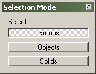

Toolbars: Selection Mode
The Selection Mode toolbar is used to determine how groups and solid entities will affect the selecting of objects.

The Selection Mode tool allows you to switch between the following modes:
- Groups - In this mode, clicking or selecting an object that is contained in a group or solid entity will also select all objects in that group or entity. It has no effect on the behavior of VisGrouped objects. See Grouping and VisGrouping for more information on how to place objects in groups.
- Objects - In this mode, clicking on an single object contained in a group will only select the object. The group will not be used. However, if it's a brush contained in a solid entity, the entire entity will be selected.
- Solids - In this mode, all groups and solid entities will be ignored. Clicking on a brush that is contained in a solid entity will only select the brush. The rest of the entity will remain unselected. Note that this is the same as using the Toggle Ignore Groups on the Map Operations toolbar.
- Zoom size - If a 2D view is currently in focus, it's current zoom level will be shown.
- Grid information - The last box displays the current state of the grid options. "Snap: On Grid: 64 ". This means that Snap To Grid is enabled and the current Grid Setting is set to 64 unit increments.
- Size information - While creating new objects with the Block Tool, the Status Bar will show the dimensions of the object that is being created.
© 2004 Valve Corporation. All rights reserved. Valve, the Valve logo, Half-Life, the Half-Life logo, the Lambda logo, Steam, the Steam logo, Team Fortress, the Team Fortress logo, Opposing Force, Day of Defeat, the Day of Defeat logo, Counter-Strike, the Counter-Strike logo, Source, the Source logo, Hammer and Counter-Strike: Condition Zero are trademarks and/or registered trademarks of Valve Corporation. Microsoft and Visual Studio are trademarks and/or registered trademarks of Microsoft Corporation. All other trademarks are property of their respective owners.